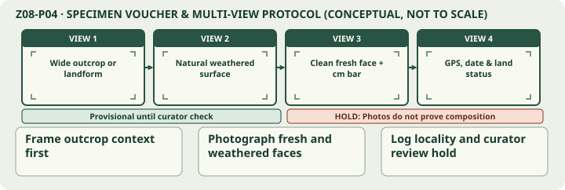

Z08-P04 · Rocks, minerals and materials · New manuscript
Documenting Geological Specimens with Scale and Provenance
Capture auditable multi-view specimen records with scale, locality, and fresh-versus-weathered faces so curators can evaluate field finds.
When it applies · Field photography and note-taking for geological reference or museum verification.
Equipment · Camera, metric scale card, notebook, GPS or quadrangle map.

Actions
- Photograph the host outcrop or gravel deposit wide before taking perpendicular close-ups of both weathered rind and natural unweathered surfaces.[R03, R19]
- Place a readable metric scale bar in the focal plane on every close-up view and record exact date, county, landform, and GPS coordinates.[R19]
- Label every field record as provisional pending curator or laboratory verification rather than treating field photographs as definitive petrography.[R03, R19]
Failure recognition · Close-up rock images without scale, locality, or outcrop context prevent geologists from distinguishing fine-grained igneous, metamorphic, and chert specimens.[R03, R19]
Verify · Four matched views, readable metric scale, exact locality notes, and legal land-status verification are saved together.[R08, R19]
Stop or change course · Stop photographing from unstable cliff ledges, active roadcuts, or protected preserves where entry or specimen disturbance is prohibited.[R08, R10, R16]
Evidence and editorial notes
- R03 · USGS · Collecting Rocks: Rock Classes and Mineral Property Basics (USGS GIP)
- Section: Igneous, sedimentary, and metamorphic rock classes · Conditions: Field rock class screening without laboratory petrography
Support: Observable grain interlocking, layering, bedding, or foliation helps separate broad rock classes.
Limitations: Weathered rinds and fine-grained dark rocks frequently mimic other classes visually; hand-lens inspection is preliminary only. · Conflicting evidence: None noted.
Editorial note: Establishes non-destructive classification limits. · Specialist reviewer: Field geologist
Primary source · checked 2026-11-25 - R08 · National Park Service / eCFR · 36 CFR 2.1 Preservation of Natural, Cultural and Archeological Resources (Current CFR)
- Section: 36 CFR 2.1 natural resource collecting prohibitions · Conditions: National Parks, Monuments, and federal recreation areas
Support: Collecting rocks, minerals, fossils, wood, or natural specimens is prohibited on National Park System lands unless specifically authorized.
Limitations: Rules vary across USFS, BLM, state, tribal, county, and private lands; check the governing land manager before taking any sample. · Conflicting evidence: None noted.
Editorial note: Prevents unlawful federal resource extraction. · Specialist reviewer: Public-lands resource manager
Primary source · checked 2026-11-25 - R10 · Minnesota DNR · Scientific and Natural Areas Visitor Rules and Prohibitions (Current web edition)
- Section: No collecting plants, animals, rocks or fossils; Foraging · Conditions: Minnesota Scientific and Natural Areas, subject to the actual site rules
Support: Leave natural features in place unless the site lists an applicable exception or there is a valid authorization.
Limitations: Certain named sites have limited berry or mushroom exceptions. They do not extend to rocks or general digging. · Conflicting evidence: Conditions are recorded in the A03 audit.
Editorial note: Enforces SNA zero-collection boundaries. · Specialist reviewer: Minnesota DNR SNA manager
Primary source · checked 2026-11-25 - R16 · Minnesota DNR · Rocks and Minerals of Minnesota Educational Guide (Current web edition)
- Section: Sedimentary limestone, sandstone, and shale permeability · Conditions: Southeastern Minnesota karst, bluff, and river-valley sedimentary strata
Support: Sandstone, limestone, and shale differ sharply in cementation, porosity, and fissility, governing weathering and cliff instability.
Limitations: Karst bluffs and fractured shales shed rockfall unpredictably; visual inspection cannot certify slope or load stability. · Conflicting evidence: None noted.
Editorial note: Covers Upper Midwest sedimentary rock hazards. · Specialist reviewer: Engineering geologist
Primary source · checked 2026-11-25 - R19 · USGS · Collecting Rocks: Rock Classes and Mineral Property Basics (USGS GIP)
- Section: Specimen documentation, scale, and locality recording · Conditions: Documenting geological specimens for reference or museum review
Support: Recording locality, host formation, metric scale, fresh vs weathered surface, and non-destructive traits preserves scientific value.
Limitations: A photograph or hand sample without locality and scale rarely permits definitive identification of fine-grained rocks. · Conflicting evidence: None noted.
Editorial note: Defines Z08 specimen voucher protocol. · Specialist reviewer: Curatorial geologist
Primary source · checked 2026-11-25
Source lineage · New manuscript (Z08 P16 specimen documentation) · Classification · New manuscript.